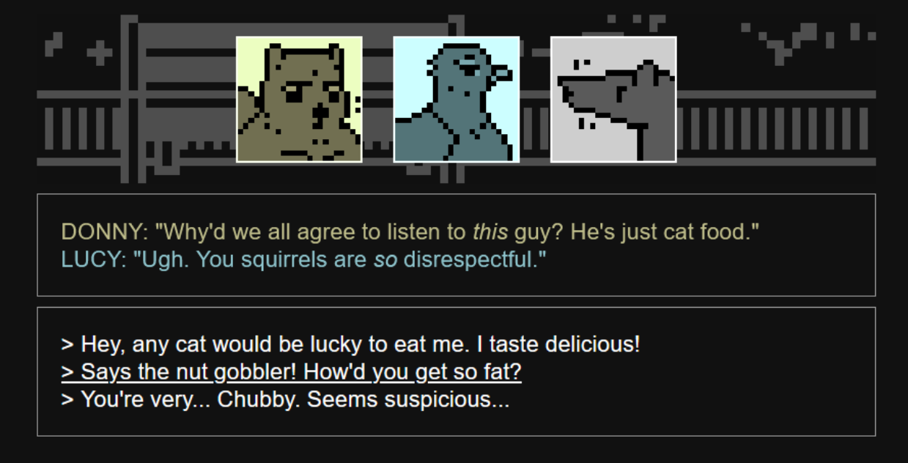
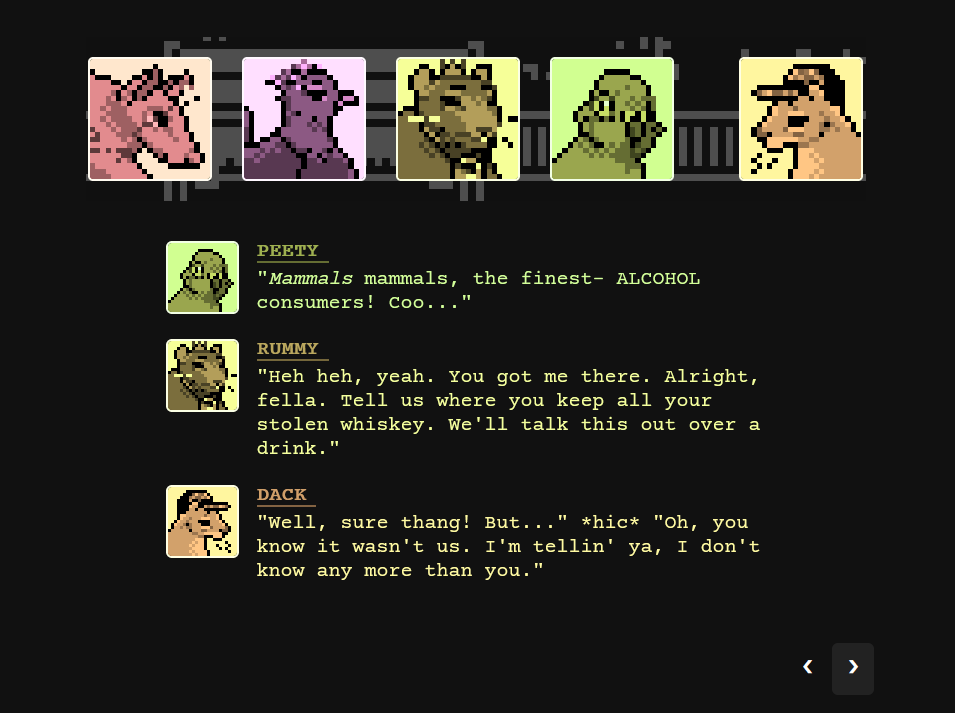

3-week prototype created in Twine, a Javascript framework for choice-based narrative games. Working in a group, I contributed project management, code, UI, and art assets.
Twine has several story formats, but I used Snowman 2.0 for this project. This format allows for complete control over the style and functionality of the project, and supports HTML shorthand.
To streamline color-matching within time constraints, each character sprite and text entry was created in grayscale, and paired appropriately with a CSS color filter applied to selectors.
Below: wireframe vs. final prototype.
 